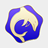

Ripple
Ripple
这是一个年轻的小团体，这是由共同的兴趣爱好凝聚在一起的一群人，我们所做的是以共同的兴趣爱好为驱动力，以成员各自当前掌握的诸如PS、FW应用、C/C++/Java、网页设计等知识为基础，通过授课团队线上线下的授课来不断提高个人的能力，增强团队的实力，不断地学习，我们为在将来做出我们自己的东西而准备着。
目前，我们的正式成员共有17人，除了广东工业大学的成员之外，还有来自华南理工大学、北京邮电大学、北京理工大学以及远在海外的纽约大学的成员。我们并非都是高手但其中不乏高手，我们还很年轻，大部分的成员还都在读大一，但也正因为年轻，我们充满了活力，蕴藏着潜力。 团队取名“波纹”，单个的波纹或许力量颇微，但是波纹之间的共鸣却能化为涟漪，激起惊涛骇浪。我们正是这样，凭借着成员之间的相互信任与合作，我们已经激起并将持续激起一朵朵的绚丽的浪花。
团队记事： 2013年9月初，波纹团队正式成立 2013年10月14日，波纹团队广州大学城成员第一次正式见面会 2013年11月1日，波纹团队网站1.0版本上线 2013年12月7日，在广东工业大学的第一次无偿公开授课开始（Photoshop） 2014年1月24日，www.波纹.cn启用 2014年1月26日，波纹团队网站2.0版本更新 2014年2月14日，www.喜欢你.cn，爱的宣言网站，测试版本上线